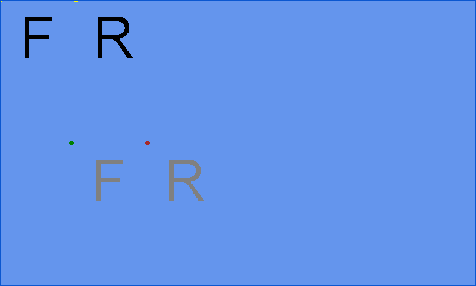

Transformed Collision Test
Ported from the second runnable game in Microsoft's XNA 4.0 Transformed Collision sample.
Source for this sample on GitHub ↗

Play ▸Opens in a new tab. Click the canvas so it receives mouse and keyboard input.
About this sample
Transform the F and R sprites and watch the background turn red when their visible pixels intersect. The grey drawing shows one sprite in the other's local coordinate space, making rotation, scale and origin changes visible.
Controls
| Action | Mouse / keyboard | Gamepad |
|---|---|---|
| Move sprite | Drag F with left button; R with right button | Hold its trigger and move left stick |
| Move origin | Hold Left Ctrl while dragging | Hold its shoulder and move left stick |
| Rotate | Mouse wheel or Left / Right arrow while dragging | Hold its trigger and move right stick horizontally |
| Scale | Alt + mouse wheel or Up / Down arrow while dragging | Hold its trigger and move right stick vertically |
| Exit | Esc or close the tab | Back |